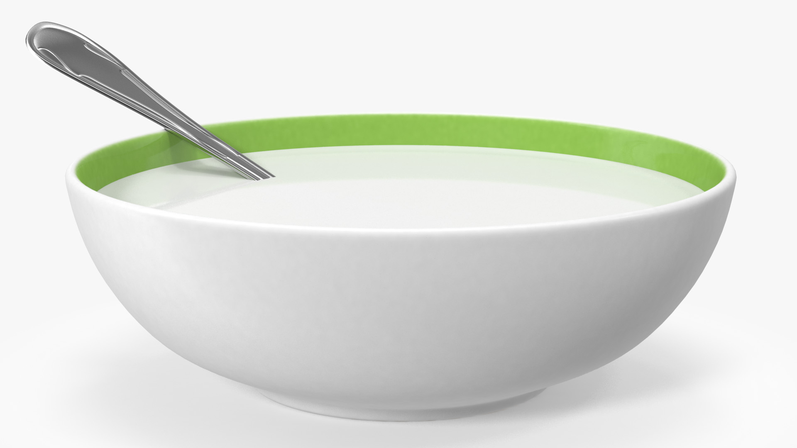

Milk Soup

Return to the recipe directory
Description
Ah milk soup! Where would we be without you? The pure simplicity of perfection that you offer the world is second to none. Don't believe it? Well, trying out this recipe couldn't be any simpler, so follow along below to see for yourself
Ingredients
- Milk
- Lactose intolerant? Any milk substitute will do. For example, you might want to try almond milk, macadamia milk, bees milk, etc. Alternatively, those more lactose-adventurous may want to consider goats milk, bear milk, beaver milk, etc.
Steps
- Acquire milk of choice
- Chill milk in fridge
- Pour milk into ceramic bowl (very important!)
- Best enjoyed on a hot summer's day